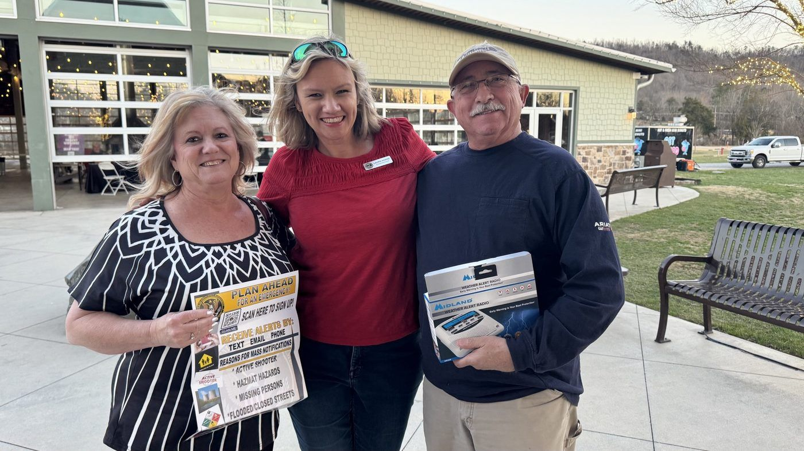
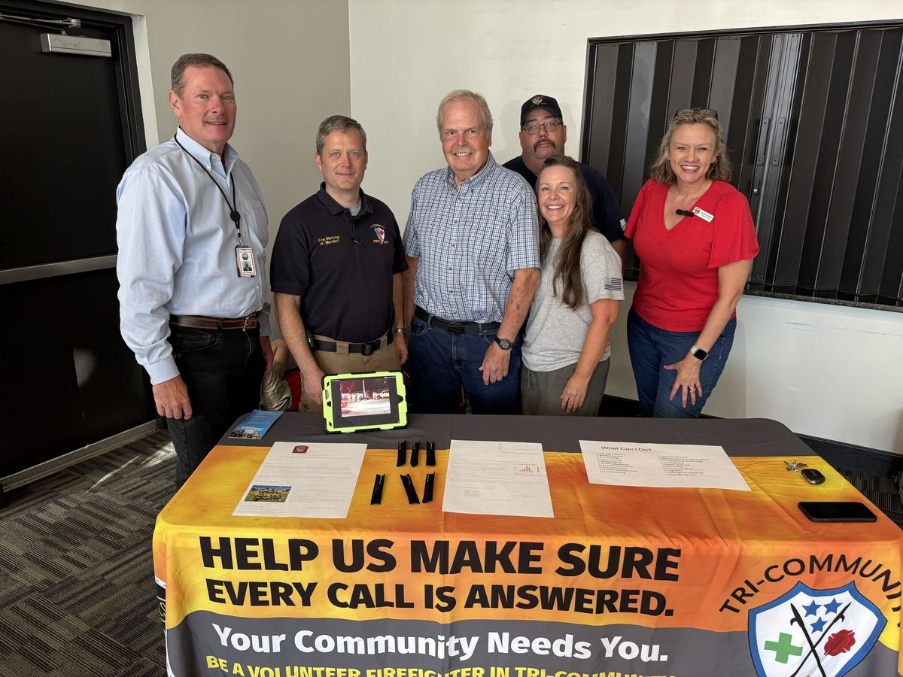
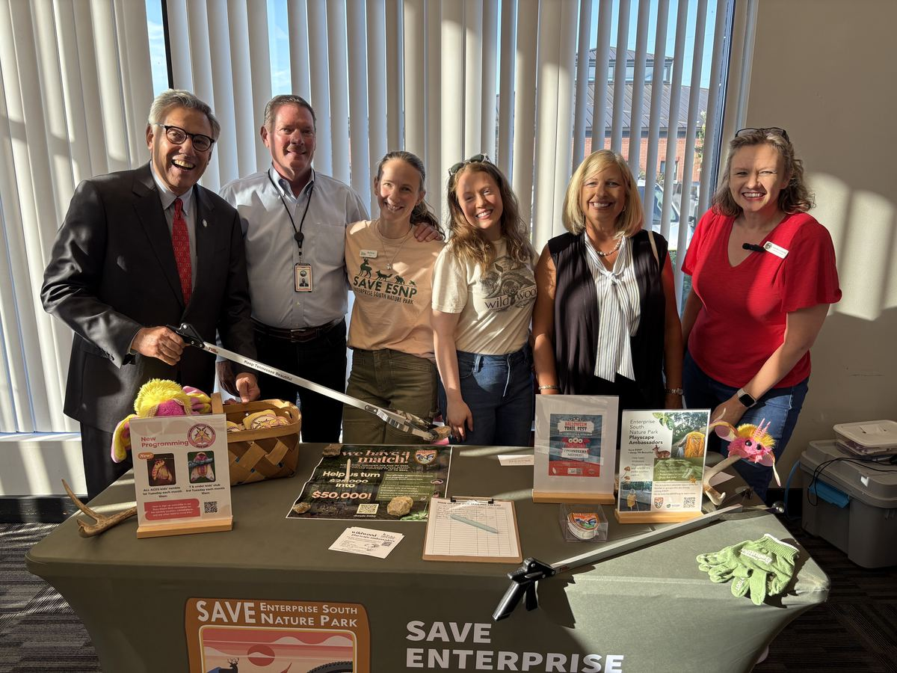
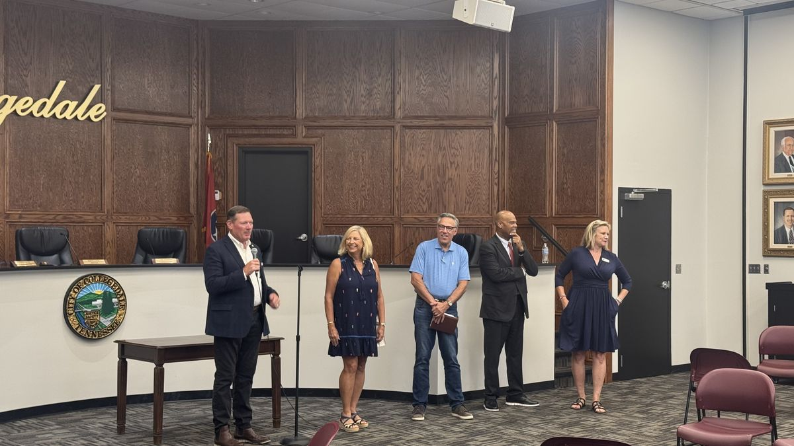
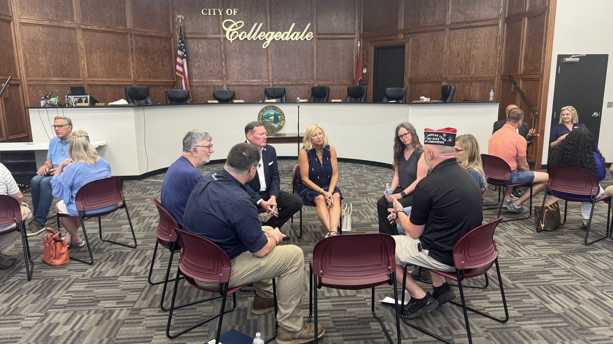

Every fifth Monday
Community CARE
An open, informal meeting between a commissioner and the people she works for. No podium, no time clock — bring your questions about the city and get real answers.
What to expect
Fifth Mondays belong to you
Whenever a month has five Mondays, the fifth one is reserved for Community CARE. It's the promise she made when she ran — quarterly face time between residents, commissioners, and city officials — made real as a recurring habit.
Come with a question about a recent vote, a problem on your street, or an idea worth exploring. If she doesn't know the answer on the spot, she'll chase it down and follow up.
Location: City Hall — the room and start time are announced with each date. Check this page, her Facebook page, or send her a note and she'll make sure you know.

Why "CARE"
It's a standard, not a slogan
CARE is how she promised to show up — and the yardstick residents should hold her to.
The commitments behind it
What Collegedale can hold her to
Communication
Regular, face-to-face time for citizens, commissioners, planners, and city officials to solve problems together — plus pushing for emergency communication and a real city newsletter, not just Facebook posts.
Accountability
The commission and city management answer to the citizens of Collegedale for how taxpayer dollars are spent. Every decision should trace back to the needs of the people who live here.
Respect
Citizens should feel like the priority in their own town. City services deserve a customer-service mindset, and every resident deserves to be heard and respected.
Efficiency
The word is on Collegedale's city seal. Mowing, sidewalks, road maintenance, smart traffic signals — she keeps asking whether city resources are actually working as hard as the people paying for them.
The latest — Monday, August 31
So many ways to serve
The August meeting was a volunteer fair — a room full of local organizations set up in the West Room so neighbors could walk in, ask questions, and find their fit. No sign-up, no pitch to sit through, just people who serve.


In their own words
Meet the volunteers
She walked the fair with a camera so each organization could make its own pitch. Tap a video and hear it straight from the people doing the work.
Earlier this summer
June 29, 2026 — Court Room at City Hall
The billing on the flyer read “a time to listen, share concerns, and focus on solutions for our community” — and the room backed it up. It wasn't just one commissioner taking questions:
Guests included
- State Rep. Greg Vital
- County Commissioner Jeff Eversole
- School Board Rep. Felice Hadden
- Collegedale Judge Curtis Bowe
- Collegedale City Commissioner Laura Howse
One evening, one room: your state representative, county commissioner, school board rep, city judge, and your city commissioner — all there to listen. That's the whole idea.


Mark your calendar
Fifth Mondays, 2026–2027
Want a reminder or have a topic you'd like covered? Send it in — Community CARE agendas are built from what residents bring.